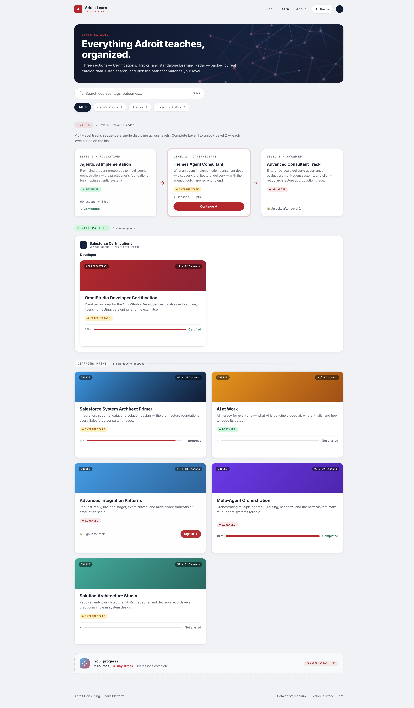
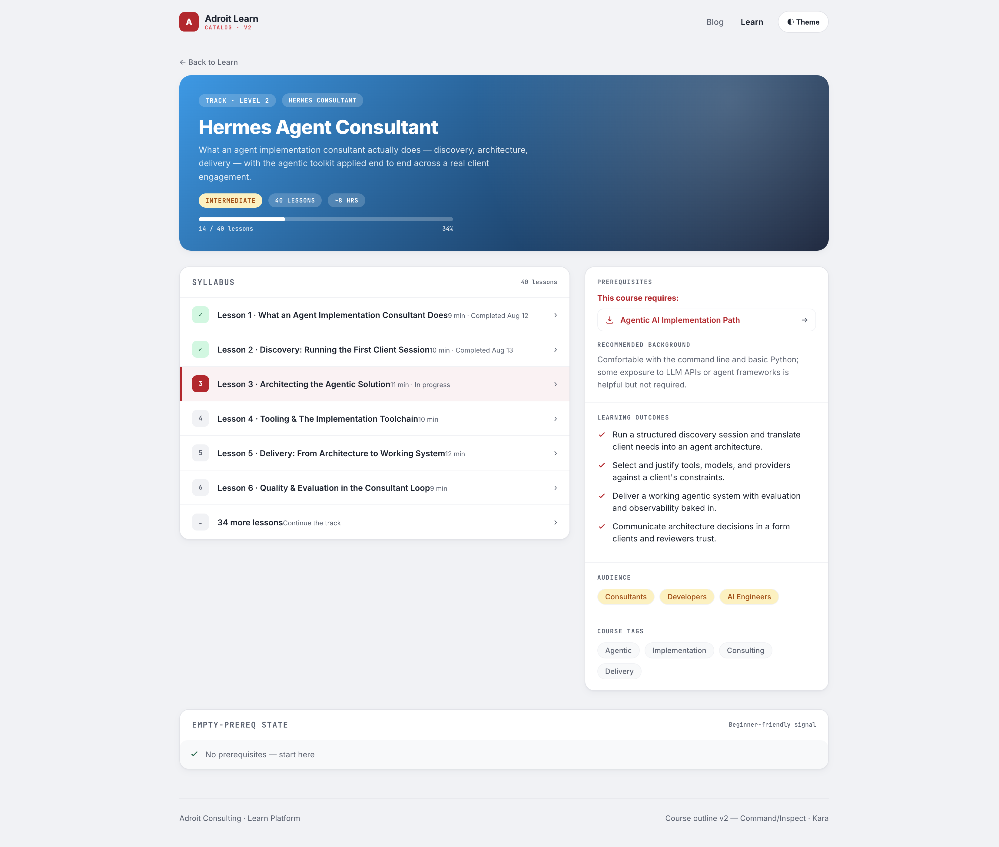
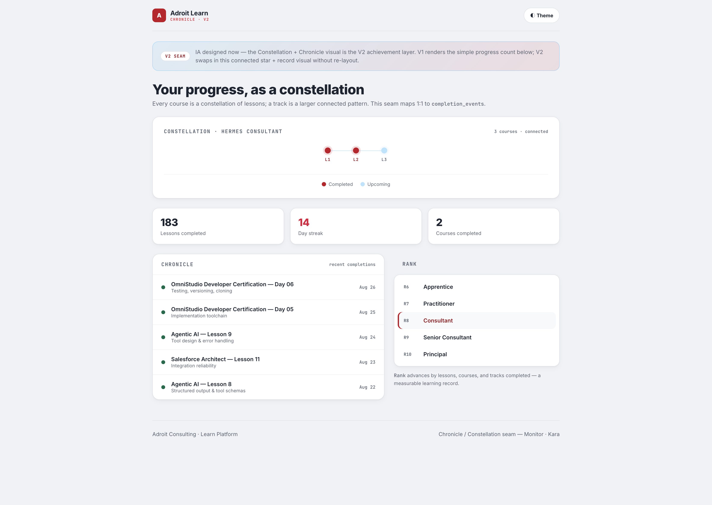

Composed from the discovery brief (t_754320cf) + 3 mood boards. "From bucket to map": Certifications / Tracks / Learning Paths as data-backed sections, a connected three-level track path, rich course outlines, and a reserved Chronicle/Constellation seam. Execution task t_cffa75b8 · Kara.
| Surface | Where | Composition |
|---|---|---|
| Explore | /learn hub | Section chips + search toolbar + three data-backed sections; result grids + peek. |
| Compare (sub) | Tracks block in hub | Three aligned level cards L1/L2/L3, connecting rail + arrow, one emphasized next-action. |
| Command/Inspect | /learn/[series] outline | Dense profile: syllabus rail (left) + Prerequisites/Outcomes/Audience/Tags column (right). |
| Monitor (seam) | V2 Chronicle/Constellation | Progress slot reserved; connected star pattern + record list. IA now, visual V2. |
Full additive token file: design/t_cffa75b8/design-tokens-learn-v2.css. Applied on top of globals.css + design/design-tokens.css + round3 + catalog/admin tokens. Every new token ships an html.dark remap.
| Group | Token | Light | Dark | Purpose |
|---|---|---|---|---|
| Section identity | --section-cert-* | #047857 emerald | #34D399 | Certifications |
| --section-track-* | #C8102E red | #F05066 | Tracks | |
| --section-paths-* | neutral | neutral | Learning Paths | |
| Difficulty | --diff-beginner-* | #047857 | #34D399 | Beginner |
| --diff-intermediate-* | #B45309 | #FBBF24 / #FDE68A | Intermediate | |
| --diff-advanced-* | #A00D24 | #F47385 / #FDA4AF | Advanced | |
| Track connector | --track-connector / arrow | #D1D5DB / #C8102E | #64748B / #F05066 | Connected path rail |
| Profile facets | --prereq-* / --outcome-* / --tag-chip-* | red links / red ticks / soft chips | accent-hover / accent / sunk chips | Outline profile column |
| Search toolbar | --search-* | card input | card input | Explore search |
| V2 seam | --chronicle-* / --constellation-* | #E11D48 streak · #4FC3F7 star | #FB7185 · #7DD3FC | Chronicle/Constellation (placeholder) |

Section chips (All/Certifications/Tracks/Learning Paths, live counts) · search toolbar · Tracks connected-path Compare composition (L1 completed → L2 current with Continue → L3 locked) · Certifications vendor group · Learning Paths 2-col grid with difficulty pills + guest gating + Chronicle seam.

Hero with difficulty pill · two-column Inspect: syllabus rail (left) + profile column (right: Prerequisites structured + recommended background → Learning outcomes → Audience → Course tags) · empty-prereq state shown as annotation.

Connected constellation (course = stars, track = larger pattern) · stats strip · Chronicle list (dates, streak) · rank ladder. V1 renders the simple progress count; V2 swaps in this visual without re-layout.
| Component | States |
|---|---|
| Filter chip | default, hover, active (aria-pressed), count badge |
| Search | default, focus (ring), non-empty (clear button), empty results (CTA) |
| Track card | completed (✓ + dimmed), current (ring + red Continue), locked (unlocks hint), hover (lift) |
| Path card | default, hover (lift), in-progress, not-started, completed, guest-locked (sign-in CTA) |
| Difficulty pill | beginner / intermediate / advanced × light + dark |
| Prerequisites | structured requires-list, recommended background, empty ("No prerequisites — start here") |
| Lesson row (syllabus) | default, hover, active (in-progress), completed (✓) |
New DB fields/tables: catalog_sections, catalog_groups, courses.section/group/track/level/sort_order, course_prerequisites, recommended_background, difficulty, audience, learning_outcomes, course_tags, completion_events.
Slop score: 1/10 — only a mild echo of the feature-card grid in the Learning Paths grid, which is appropriate for an Explore result grid (not a marketing page). No tech gradient, no generic indigo, no accent rails, no unearned glass, no monument stats, no center stack, no icon toppers; type is the shipped Inter + JetBrains Mono.
Wow-factor: 5/6 — real imagery (gradient bands + constellation hero asset), depth (layered shadows, hover lift), typographic scale (oversized hub title + LEVEL N mono labels), craft (consistent radius/spacing system, hover states everywhere), and the signature connected-track-path composition. Motion is restrained by design (hierarchy, not a loading bar).